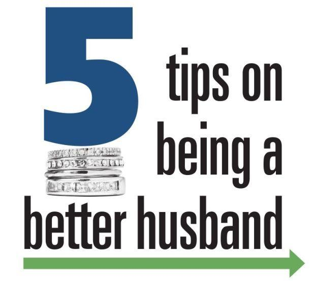

더 나은 남편이 되기 위한 팁
게시: 2020-04-16T06:30:27+09:00
최근 코로나-19 사태로 인해 재택근무를 하게 되면서 저는 퇴직 이후 삶을 미리 경험하게 되었습니다. 집에서 와이프와 함께 지내는 시간이 극적으로 많아진 것이지요. 뉴스를 보면 이렇게 세계적으로 재택근무나 자가격리가 계속 되면서 코로나 베이비 붐이 예상된다는 소식도 있지만 가정 폭력 증가라는 안타까운 소식도 들려옵니다. 집이 아주 넓은 부자들이야 이야기가 다를 수 있겠습니다만, 좁은 집에서 24시간 같이 편하게 지내려면 좋은 남편이 되어야 합니다. 그래서 찾아보았습니다. 그런데... 저 아래에서 보시겠습니다만 미국인들 갬성으로 만들어진 것이라서 우리 취향에는 너무 오글거리는 것이 많습니다. 그래서 저 개인적으로 생각하는 '더 좋은 남편이 되기 위한 8가지 팁'을 먼저 정리해 보았습니다. 물론 저 개인 관점에서 쓴 것이니 지극히 남성 중심적인 관점입니다. 해외 사이트에서 언급한 것과 겹치는 것도 있습니다만, 대부분은 일맥상통한다고 생각합니다. 오해하시면 안되는 것이 저는 잘 하고 있기 때문에 이렇게 쓴 것은 아닙니다. 저는 매우 부족한 남편이지만, 저도 노력하겠습니다.
1. 와이프와 싸워 이길 생각을 하지 말라. - 와이프는 항상 옳습니다. 만약 와이프 말과 사전이 다르다면 사전이 틀린 것입니다. 중요한 것은 행복한 가정이지 당신이 옳다는 것을 증명하는 것이 아닙니다. 당신이 이기고 싶으면 밖에 나가서 이기십시요.
(이해가 가지 않으시는 남성분들은 그냥 외우십시요.)
2. 와이프와 이야기를 많이 하라. - 연애할 때 와이프를 꼬시기 위해 얼마나 열심히 대화를 했는지 기억하십시요. 항상 그때처럼 열심히 와이프와 이야기를 많이 하십시요. 그러면서 와이프를 많이 웃게 하십시요. 서로 이해하고 서로 정이 쌓이려면 대화를 많이 해야 합니다. 당신은 정우성이 아니니 '남자다운' 과묵함으로는 결코 좋은 남편이 될 수 없습니다. 심지어 정우성도 말 많이 합니다. 그러니 정우성이 될 수 없다면 박명수가 되십시요. 정우성은 타고 나는 것이지만 박명수는 노력하면 누구나 될 수 있습니다. 3. 와이프에게 금전 상황을 공유하라. - 연애 시절과 결혼 생활에서 가장 크게 차이나는 부분이 바로 금전적 부분입니다. 연애는 환상일지 몰라도 결혼은 현실이고, 현실에서는 돈이 매우 중요합니다. 당신의 금전 상황이 좋든 나쁘든 와이프와 공유하는 것이 중요합니다. 당신의 금전 상황이 매우 좋다면 와이프의 존경을 받을 것이고, 금전 상황이 그저그렇다면 와이프는 안정감을 가질 것입니다. 금전 상황이 나쁘다고 해도 당신은 와이프의 동정과 협조를 받을 수 있을 것입니다.
특히 금전 상황을 와이프에게 공개하는 것이 중요한 이유가 두가지 있습니다. 하나는 집안의 예산 결정권을 와이프와 공유하게 된다는 점입니다. 자동차와 같은 큰 비용이 들어가는 물건을 산다든가, 주식 투자를 한다든가 할 때 와이프의 동의를 구하는 것을 원칙으로 해야 하는데, 와이프도 결정을 하자면 집안 금전 상황을 알아야 합니다. 둘째는 와이프에게 신뢰를 준다는 것입니다. 와이프가 결혼 생활에 대해 불안해 하는 것에는 배우자의 외도나 도박, 주식 투자 실패 등 여러가지 것들이 있는데, 금전 상황이 투명하다면 와이프는 남편에 대해서 최소한 그런 쪽으로는 불필요한 의심과 걱정을 하지 않아도 됩니다. 4. 외식을 자주 하라. - 남녀평등의 시대이고 남자도 요리를 많이 합니다만, 그래도 여자가 집안일, 특히 부엌일을 하는 경우가 훨씬 많습니다. 그리고 요리를 좋아하는 사람조차 매일 삼시세끼 일상적인 밥상 차리는 것을 좋아하지는 않습니다. 가장 좋은 해결책은 경제 상황이 허락하는 한 외식을 자주하는 것입니다. 굳이 호텔 부페일 필요도 없고 맥도X드나 김밥X국도 좋습니다. 그러면서 같이 산책이나 드라이브를 하고, 그러면서 더 대화를 하는 것은 부록입니다. (코로나-19가 빨리 종식되어야 할텐데요...) 5. 육아나 가사 노동을 절대 돕지 말라. 그건 도울 일이 아니라 당연히 같이 해야 할 일이다. - 흔히 돈이 없거나 바람을 피워서 부부 싸움이 일어난다고 생각하지만 부부간 갈등 원인 중 큰 것은 불공평하다는 감정입니다. 맞벌이 부부는 말할 것도 없고, 와이프가 전업주부인 경우에도 남편이 집안 일을 같이 하는 것이 중요합니다. 여성분들이 가장 싫어하는 남편 말 중 하나가 '내가 도와줄게' 라는 것입니다. 마치 집안 일은 여자 몫인데 자기가 특별히 선심써서 도움을 주겠다는 뜻이 내포되어 있기 때문입니다. 돕지 말고, 당연히 남편이 해야할 일을 스스로 찾아서 하십시요. 갓 결혼한 여성직원이 한탄하기를 '시키지 않으면 남편이 집안 일을 하지 않는다, 식탁 위의 설거지 거리나 빨래, 청소 등은 자기 일이 아니라고 생각하는 것처럼 느껴진다' 라고 하더군요. 육아든 가사 노동이든 남편도 자기 일이라는 인식을 가져야 합니다. 나중에 '당신이 그런 말 안 해줬쟎아, 난 몰랐어'라는 말을 하는 것은 무책임한 일입니다. 와이프는 남편에게 밥해주고 빨래해주고 청소해주려고 당신과 결혼한 것이 아니라, 와이프 자신의 행복을 위해 결혼한 것입니다. 와이프의 그 기대를 충족시켜주기 위해 당신이 무엇을 해야 하는지 스스로 찾아보고 공부한 뒤에 와이프와 상의하십시요. 6. 시댁 문제를 와이프에게 강요하지 말라. - 이건 유교적 가부장제의 잔재가 많이 남아 있는 우리나라에 특히 적용되는 이야기입니다. 결혼은 원래 두 남녀가 결혼하면서 독립하는 것인데, 우리나라에서는 부부의 독립이 아니라 남자 집안에 막내인 새 여성 멤버를 들여오는 것이라고 생각하는 경우가 많은 것 같습니다. 시댁과의 관계 등에 있어서 와이프에게 어떠한 것도 강요해서는 안됩니다. 가령 시부모님에 대한 효도는 자식인 남편 본인이 하면 됩니다. 그걸 와이프에게 명시적이든 암묵적이든 강요하는 것은 자신의 책무를 와이프에게 떠넘기는 무책임한 행동입니다. 부모님이 며느리의 봉사를 원하셔서 어쩔 수 없다고요? 당신 부모님의 문제를 당신 와이프에게 떠넘기지 마십시요. 그건 당신 와이프가 아니라 당신이 해결해야 할 문제입니다. 7. 절대 와이프를 말이나 행동으로 겁먹게 하지 말라. - 원래 인생이란 힘든 일로 가득합니다. 생활이 힘들면 당연히 짜증이 나고 싸움도 잦아집니다. 부부 싸움을 안하는 것은 매우 비정상적인 일입니다. 어느 한쪽이 그저 꾹꾹 참고 있다는 이야기거든요. 사람인 이상, 그건 결국 터집니다. 싸움은 하되, 기술적으로 잘 해야 합니다. 예외는 있겠지만 대개의 경우 남자가 신체적으로 더 강하기 때문에 남녀간의 싸움에서 여성은 기본적으로 공포심을 가지게 됩니다. 그러므로 부부 싸움에서 폭력은 언급할 가치도 없을 뿐만 아니라 언성도 높여서는 안됩니다. 그런 짓은 여자에게 내세울 것이 힘 밖에 없는 못난 남자들이나 하는 짓입니다. 만약 화가 난다면 화가 풀릴 때까지 일단 침묵하십시요. 대화는 화가 풀리고 난 뒤에 해도 늦지 않습니다.
8. 무엇보다, 와이프를 존중하라. - 위에서 나열한 모든 것들은, 사실 와이프를 인격체로 존중한다면 굳이 일일이 신경쓰지 않아도 자연스럽게 이행되는 것들입니다. 무엇보다 와이프를 인격체로서 존중하십시요. 와이프는 당신 인생의 절반을 차지하는 매우 소중한 존재이고, 바로 당신이 선택한 존재입니다. 당신 자신을 존중한다면 당신의 반쪽인 당신 와이프도 존중하십시요.
이하는 여기저기 해외 사이트에서 따온 '더 나은 남편이 되기 위한 팁들입니다.
--------------------------------------------------------

더 나은 남편이 되기 위한 5가지 팁 https://www.heraldextra.com/staff/elyssa-andrus/5-tips-on-being-a-better-husband/article_980a00c0-de64-521d-83f8-c8d325010391.html 1. 와이프를 바꾸려 하지 말라 - 와이프의 완벽하지 않은 점을 있는 그대로 받아들여라. 너도 완벽하지 않다. 와이프를 바꾸려 노력할 힘이 있다면 너 자신을 바꾸려 노력하라. 2. 비교하지 말라 - 아는 사람이나 뉴스, SNS 속의 다른 와이프와 당신의 와이프를 비교하지 말라. 3. 긍정적인 측면에 집중하라. - 애초에 왜 이 여자와 사랑에 빠졌는지 그 순간과 그 이유를 떠올려라. 4. 이해받고자 한다면 먼저 이해하라. - 와이프를 판단하기 전에 먼저 상대방의 입장과 감정을 듣고 이해하라. 그러면 상대방도 너의 입장과 감정을 이해하려 할 것이다. 5. 집안일을 함께 하라. - Full time job을 가진 여성들조차 대개 집안일을 훨씬 더 많이 한다. 집안일을 많이 하는 여자는 화도 자주 내고 더 짜증을 내기 쉽다. 남편들은 육아와 집안일이 여자의 일이 아니라 공동 책임이라는 것을 인식해야 한다.
--------------------------------------------------------
더 좋은 남편이 되기 위한 9가지 방법 https://www.fatherly.com/love-money/relationships/marriage-advice-be-better-husband-nine-simple-ways/ 1. 자신을 와이프를 위한 '감정 노동자'라고 생각하고 너의 몫을 다하라. - 대부분의 여성들은 일상적인 경제 활동이나 가사 노동 뿐만 아니라 남편의 감정을 배려하느라 애쓴다. 이는 가정을 유지하기 위한 '감정 노동'이라고 할 수있다. 너도 너의 몫을 다하라. 와이프의 비위를 맞춰주고 기분을 좋게 해주려 노력하라. 2. 스마트폰 좀 내려놔라. - 와이프에게 집중하라. 대화 좀 해라. 3. 감사 표시를 좀더 자주 하라. - 사람들은 이해와 인정을 받고 싶어한다. 가장 쉬운 것은 와이프에게 고맙다고 말하는 것이다. 4. 집에 들어설 때 집안 분위기가 어떻게 바뀔지 신경써라. - 인생은 스트레스로 가득하다. 그걸 통제할 수는 없다. 그러나 집에 그걸 가져갈 필요는 없다. 5. '정지' 버튼 누르는 법을 배워라. - 당신 자신이 의심이나 비난을 받을 때는 흥분하기 쉽다. 와이프에게 반응하기 전에 시간을 가져라. 6. 긍정적이 되기 위해 노력하라. - 연애 초기에는 저절로 좋은 감정이 마구 솟아나지만 장기적인 관계에서는 그렇지 않다. 오래 가는 부부는 서로에게 긍정적이기 위해 부단히 노력한다. 7. 더 자주 추파를 던져라. - 연애 초기에 그랬던 것처럼 와이프를 꼬시기 위해 추파를 던져라. "이제 결혼했으니 그 짓은 더 안해도 되네" 라는 생각은 정말 착각이다. 8. 감사 표시를 할 때는 분명히 해라. - 그냥 '고마워'라고 말하는 것은 충분치 않다. 어떤 점이 고마운지, 왜 고마운지 분명히 말하라. 그것이 상대방에게 집중하는 것이다. 9. '당신'이라는 말보다 '나'라는 말을 더 자주 써라. - '당신은 이 점을 고쳐야 해' 라든가 '당신이 그랬쟎아' 라는 말은 시작부터 잘못된 것이며 와이프를 방어적으로 만든다. 와이프를 고치려 하거나 비난하려 들지 말고 '내'가 변화하고 '내'가 고칠 생각을 하라. -------------------------------------------------------- 또 다른 더 좋은 남편이 되기 위한 10가지 팁
Source : https://www.allprodad.com/10-tips-for-becoming-a-better-husband/ 1. 매일 한가지씩 아무거라도 와이프에게 상냥한 행동을 하라 - 한가지가 작다고 ? 의도적으로 하다보면 점점 더 많이 하게 된다. 2. 돈 문제에 대해 와이프에게 감추지 말고 말하라 - 돈 문제로 와이프를 놀라게 하는 것은 언제든 좋지 않다. 와이프에게 금전 현황에 대해 터놓고 이야기하라. 와이프가 쓰는 돈을 감시하라는 이야기가 아니다. 너의 금전 상황을 감추지 말고, 와이프의 요구 사항을 존중하고, 중요한 금전 문제는 와이프와 한 팀으로 결정하라는 이야기다. 3. 와이프에 대해 좀 더 알려고 노력하라. - 최근 와이프가 무슨 책을 읽었는지 아는가 ? - 3일짜리 연휴가 생긴다면 와이프가 어디에 가고 싶어 하는가 ? - 와이프가 당신에게 원하는 것이 뭔지 아는가 ? - 질문을 하고, 들어라. 4. 와이프에게 얼마나 사랑하는지를 창의적인 방법으로 보여주라. 와이프도 알겠지 라고 가정하지 말라. - 사랑한다고 쪽지를 써보라 - 작은 기념일을 생각해보고 축하하라 5. 와이프와 자주 놀아라. 비싸고 거창한 것일 필요는 없다. - 보울링 - 야밤의 산책 - 블루마블 게임과 아이스크림 6. TV 시청이나 인터넷질 하는 시간을 재어보고 반으로 줄여라. 그 시간으로 와이프와 뭔가 같이 해라. 7. 가장 열심히 하는 일 5가지를 적고 그 중 어느 것에 시간을 가장 많이 쓰는지 순위를 매겨보라. 와이프가 그 중 #1이 아니라면 그 순위를 높이기 위해 뭘 해야 하는지 궁리해라. 8. 친구들과 터넣고 이야기해라 (Confide in some friends) (이건 뭔 소리인지 저는 이해가 안 가는군요) 9. 와이프와의 대화를 긍정적으로 적극적으로 하라 - 아무 생각 없이 와이프와 수동적으로 이야기하지 말고, 와이프와 얼마나 자주 말다툼을 하는지, 농담은 얼마나 자주 주고 받는지, 관계가 좋아지는 대화 내용은 어떤 것이었는지 등을 생각해서 적극적으로 와이프와 대화하라는 이야기입니다. 10. 상담을 받아봐라 (아무래도 이런 팁 글은 주로 상담사들이 쓰나봐요.) -------------------------------------------------------- 또 다른 '더 좋은 남편이 되기 위한 10가지 팁'들입니다. https://www.chabad.org/library/article_cdo/aid/3726238/jewish/10-Pieces-of-Advice-for-Husbands.htm 1. 와이프가 너에게 상처주는 말이나 행동을 하더라도 개의치 말고 그냥 지나쳐라 - 사람은 누구나 감정적이거나 비이성적으로 굴 경우가 있다. 그렇다고 너도 그래서는 안된다. 네가 잊었다고 와이프도 잊을 거라고 생각해서는 안된다. 2. 뭔가에 대해 와이프를 흠집잡기 전에, 그게 당신에게 진짜 중요한 일인지 다시 생각해보라. 그냥 모른 척하고 지나가는 것이 더 낫지 않은가 ? 3. 남녀간의 가치관의 차이에 대해서는 상담을 받아라. (정말 아무래도 이런 팁 글은 주로 상담사들이 쓰나봐요...) 4. 매일 와이프를 한번씩이라도 웃게 만들 방법을 찾아보라. 작은 것도 괜찮다. 5. 절대 언성을 높이지 말라. 남자들은 자신들이 생각하는 것보다 언성을 높이는 일이 많다. 남자는 강조를 위해 언성을 높이지만 여자들은 화가 날 때만 언성을 높이는 경우가 많다. 6. 매일 와이프를 칭찬하라. 칭찬할 거리를 찾으라. 당신이 와이프를 신경쓰고 소중히 여긴다는 것을 알게 하라. 7. 와이프에게 꽃을 사주라. 돈이 없으면 야생화라도 한송이 꺾어와라. 8. "내 생일 선물 같은 거 사줄 필요 없어" 라는 말은 무시하고 선물을 사라. 9. 와이프를 존중하고 와이프를 공주처럼 대하라. 와이프를 위해 문을 잡아주고 코트를 받아주라. 10. 와이프가 차려입었다면 자세히 살펴보고 얼마나 예쁜지 꼭 칭찬을 하라. 와이프는 그렇게 차려입으려고 많은 시간과 에너지를 썼다.